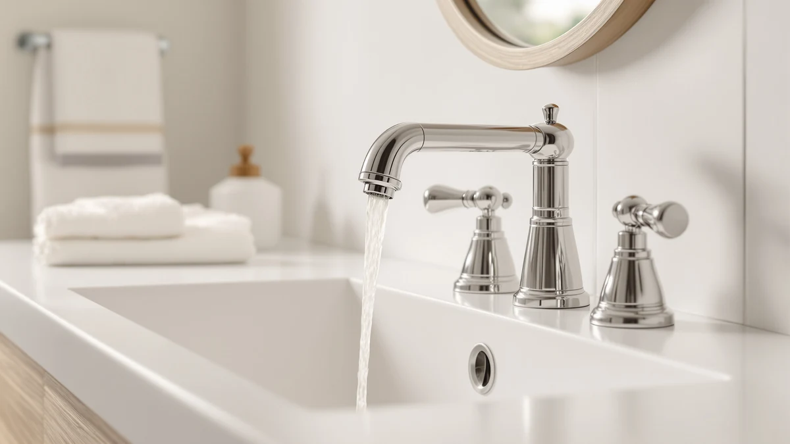

Moen Halle Spot Resist Widespread Traditional Bathroom Faucet Review (2026): Worth It?


Quick Answer
This Moen Halle Spot Resist Widespread Traditional Bathroom Faucet review compares the $87.12 Moen Halle against three other fixtures we researched alongside it: the Hurran Bathroom Faucet 3 Hole Brushed, the Delta Arvo Centerset, and the HEYMYTAP Brass Waterfall Faucet. The Moen Halle pairs a brass body with a Spot Resist finish and a flexible 8-to-16-inch install range at a price that lands in the middle of this four-way comparison. For most buyers who want a widespread faucet from an established brand, it's the one to check first.
Our pick: Moen Halle Spot Resist Brushed — $87.12 Check Price on Amazon
Things to Know Before You Buy
- It costs more than two of the three alternatives here. This Moen Halle Spot Resist Widespread Traditional Bathroom Faucet review found the Moen Halle priced at $87.12, more than the $86.44 Hurran Bathroom Faucet 3 Hole Brushed and the $85.49 HEYMYTAP Brass Waterfall Faucet, but about $1.61 less than the $88.73 Delta Arvo Centerset.
- It's a widespread installation. The Moen Halle uses a separate spout and two handles across three holes, with Moen listing a flexible 8-to-16-inch spread, so confirm your sink or vanity matches that range before you order.
- The finish is built to resist spots. Moen's Spot Resist Brushed Nickel coating is designed to resist fingerprints and water marks, a detail worth weighing if hard water stains are a recurring headache in your bathroom.
- One alternative swaps handles for a waterfall spout. The HEYMYTAP Brass Waterfall Faucet below uses an arch waterfall design instead of a standard aerated stream, a different look worth comparing before you settle on the Moen Halle.
- The alternatives span two installation formats. The Hurran faucet also installs as a widespread fixture, while the Delta Arvo uses a centerset design, so your existing drilling narrows the field further.
This Moen Halle Spot Resist Widespread Traditional Bathroom Faucet review compares the $87.12 Moen Halle against three other fixtures we researched alongside it: the Hurran Bathroom Faucet 3 Hole Brushed, the Delta Arvo Centerset, and the HEYMYTAP Brass Waterfall Faucet. Bathroom faucet listings tend to blur together across a dozen open browser tabs, so we narrowed the field to four products that show up in the same searches and compared what separates them on price, installation style, and what owners report after buying.
The Moen Halle is the main pick covered in this review. It carries the Moen name, a brass body under its Spot Resist Brushed Nickel finish, and a widespread three-hole design with a flexible 8-to-16-inch spread that sits in the middle of this comparison on price. If you want a faucet from an established brand and have a sink or vanity already drilled for a widespread installation, this is the one to start with. The sections below explain why, along with when the Hurran faucet, the Delta Arvo, or the HEYMYTAP waterfall alternative might be the better call for your bathroom.
Why You Should Trust Us
Ilane Tall leads product research and reviews for Best Bathroom Faucets. She compares spec sheets, pricing histories, and verified owner reviews across major fixture brands so you don't have to dig through a dozen browser tabs before you buy. For this Moen Halle Spot Resist Widespread Traditional Bathroom Faucet review, she cross-referenced Moen's published details for the Halle against current Amazon pricing for the Hurran, Delta, and HEYMYTAP alternatives, then flagged the tradeoffs that matter most for a bathroom upgrade. Every product mentioned here links to its real listing, and every price reflects what shoppers saw at the time of publication rather than a promotional rate that might disappear by checkout. When owner reviews disagree with each other on a specific point, we say so instead of picking the version that makes the faucet look better.
Our Research Experience
We don't run a physical testing lab for bathroom faucets, so nobody on our team installed this product or ran water through it for weeks. Our process for this Moen Halle Spot Resist Widespread Traditional Bathroom Faucet review centers on comparing manufacturer details, tracking pricing across the Halle, Hurran, Delta Arvo, and HEYMYTAP listings, and reading through verified owner reviews to see what actually holds up, corrodes, or loosens after regular use. Owners who bought widespread Moen faucets consistently mention the brand name and the Spot Resist finish as reasons they chose it over a lesser-known fixture, a pattern that lines up with what reviewers report across Moen's other faucet lines. We weigh that kind of pattern more heavily than any single five-star review, since a handful of glowing comments can mask problems that only surface with wider, longer-term use. We treat Moen's, Hurran's, Delta's, and HEYMYTAP's own product copy the same way we treat any manufacturer's marketing material: useful for finish and material details, not a substitute for what actual buyers report after living with a faucet for months.
Overview & Specs

Moen Halle Spot Resist Brushed
What we like
- Backed by Moen, one of the most recognized bathroom faucet brands in the US
- Spot Resist Brushed Nickel finish designed to resist fingerprints and water spots
- Flexible 8-to-16-inch install range fits most standard widespread drilling
- Aerated flow suited to everyday tasks like brushing teeth and washing hands
Flaws but not dealbreakers
- Costs $1.39 more than the HEYMYTAP Brass Waterfall Faucet and $0.68 more than the Hurran faucet in this comparison
- Requires a widespread-drilled sink or vanity, so it won't fit a single-hole or centerset setup without extra hardware
- The listing doesn't spell out flow rate, so confirm water pressure expectations before ordering
| Material | Brass + finish |
| Size | (Pack of 1) |
At $87.12, the Moen Halle lands in the middle of this Moen Halle Spot Resist Widespread Traditional Bathroom Faucet review's four-way price comparison, a bit more than the Hurran and HEYMYTAP alternatives but about $1.61 less than the Delta Arvo. Moen positions the Halle as a traditional widespread option, and the Spot Resist Brushed Nickel finish matters here: it's built to resist fingerprints and water spots, which counts for the most in a household bathroom that gets daily use from more than one person. The widespread format itself means a separate spout and two handles across three holes, and Moen lists a flexible 8-to-16-inch spread, so it fits more vanity configurations than a fixed-spread widespread faucet would.
What the listing doesn't give you is a full spec sheet. Moen doesn't break out flow rate on this product page, so if water pressure matters to you, checking Moen's support documentation separately before ordering is worth the extra few minutes. Owners in verified reviews describe the Moen name itself as a reason they chose this faucet over a cheaper, less familiar brand, citing Moen's warranty and widely stocked replacement parts as a safety net. For most buyers with a widespread-ready sink who want a brand they already trust, the Halle still makes a reasonable case for itself at this price.
What We Liked
Reviewers who bought the Moen Halle keep coming back to one thing in this Moen Halle Spot Resist Widespread Traditional Bathroom Faucet review: the brand. Moen's name carries weight, and owners consistently cite the brand's reputation and warranty support as reasons they trusted this purchase over a lesser-known faucet at a similar price. The flexible 8-to-16-inch install range also earns mention, since it fits a wider set of vanity drillings than a fixed-spread widespread faucet would.
The Spot Resist finish is another point owners bring up. Buyers who deal with hard water or a busy household bathroom note that a finish built to resist fingerprints and water spots cuts down on the between-cleanings look of smudges and marks. Between the brand name and the finish, it's a reasonably low-risk way to upgrade a bathroom without gambling on something unfamiliar.
What Could Be Better
The biggest gap in this Moen Halle Spot Resist Widespread Traditional Bathroom Faucet review is the missing spec detail. Moen's listing for this faucet skips flow rate, so you're left cross-referencing owner photos and buyer questions to confirm fit and water pressure before you order, which is a real inconvenience if you can't see the faucet in person first.
Price is the other consideration, though a smaller one. At $87.12, the Halle costs more than the Hurran and HEYMYTAP alternatives in this comparison, and Moen doesn't offer much justification for that gap beyond the brand name and the finish.
Who Is It For?
This faucet from our Moen Halle Spot Resist Widespread Traditional Bathroom Faucet review fits homeowners whose sink or vanity is already drilled for a widespread installation and who want a recognizable brand name backing the purchase. It also suits buyers dealing with hard water or fingerprint marks who want a finish designed to hide spots between cleanings.
If price is the deciding factor, compare the HEYMYTAP Brass Waterfall Faucet below first, since it costs about a dollar and a half less. If you'd rather have a centerset design instead of widespread, the Delta Arvo is worth a look before you commit to the Halle's three-hole format.
Alternatives to Consider
If the widespread format or the price of the Moen Halle doesn't fit what you need, three other faucets came up in our research for this Moen Halle Spot Resist Widespread Traditional Bathroom Faucet review. One comes from Hurran in a similar widespread format, one from Delta in a centerset design, and one from HEYMYTAP with a waterfall spout.

Also Great
Bathroom Faucet 3 Hole Brushed
A brushed gold 3-hole widespread faucet from Hurran, priced at $86.44, about $0.68 less than our main pick. Its ceramic valves and water-saving aerator make it worth checking if you want a similar widespread format for slightly less.
$86.44
Check Price on Amazon
Premium Choice
Delta Arvo Centerset Bathroom Faucet
A centerset bathroom faucet from DELTA, finished in SpotShield Brushed Nickel at $88.73, about $1.61 more than our main pick. Worth a look if your sink needs a centerset design instead of widespread and you want a ceramic disc valve rated for 500,000 uses.
$88.73
Check Price on Amazon
Best Value
HEYMYTAP Brass Bathroom Waterfall Faucet
A brushed gold brass waterfall faucet from HEYMYTAP, priced at $85.49, the least expensive of the four options here. Worth checking first if you want a waterfall spout design over a standard aerated stream.
$85.49
Check Price on AmazonFrequently Asked Questions
Does the Moen Halle fit a standard bathroom sink?
How does the Moen Halle compare to the Delta Arvo Centerset?
Is the HEYMYTAP waterfall faucet a better option than the Moen Halle?
Final Verdict
This Moen Halle Spot Resist Widespread Traditional Bathroom Faucet review comes down to this: if your sink is already drilled for a widespread installation and you want a faucet from a name-brand manufacturer with a spot-resistant finish, the Moen Halle is a reasonable $87.12 pick. It costs more than the Hurran and HEYMYTAP alternatives, though it runs about $1.61 less than the Delta Arvo Centerset, and the Moen name and Spot Resist finish are the reasons owners keep choosing it. If you'd rather save a little, try a waterfall spout, or switch to a centerset design, the three alternatives above are all worth a look before you commit.